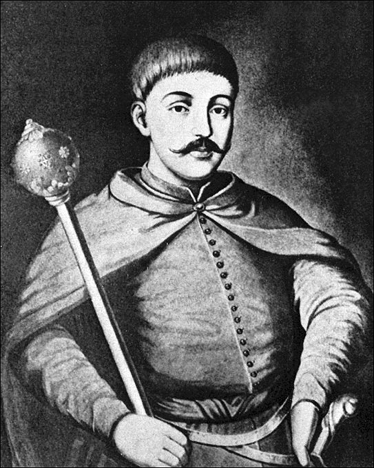
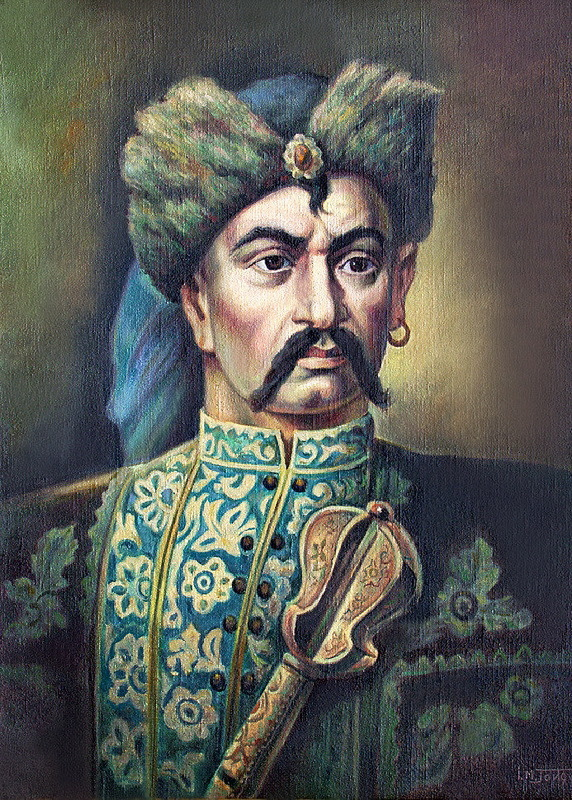
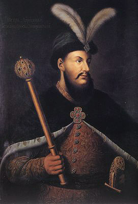

Іван Брюховецький
Під час Хмельниччини був наближеним гетьмана Богдана Хмельницького, обіймав посаду старшого джури[1].
Іван Богун
Український військовий і державний діяч, козацький полководець часів Хмельниччини.
Іван Сірко

Брав участь у війнах Богдана Хмельницького з Річчю Посполитою, але найкраще воював проти Османської імперії.
Петро Дорошенко
По смерті Богдана Хмельницького гетьманом, на старшинській раді 1657 року в Корсуні, було проголошено Івана Виговського.